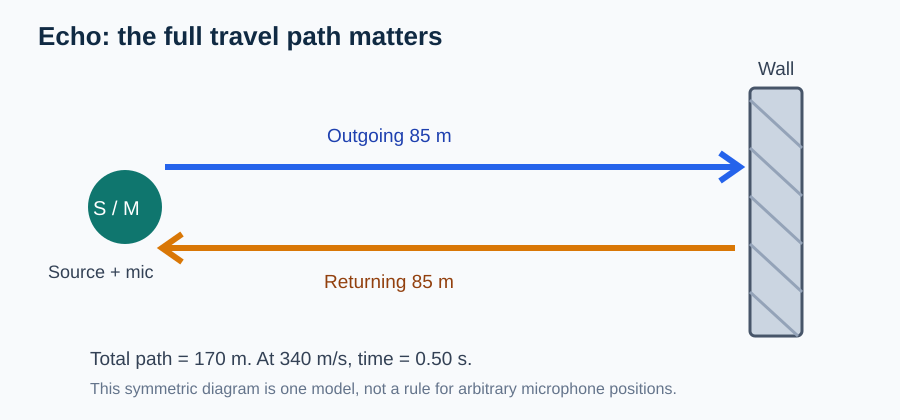

Continuous Core1A textbook manuscript · R1 candidate
Academic disposition: AUTHOR_EXPOSED_DRAFT · SOURCE_REVIEW_HOLD · NOT A PUBLISHED TEXTBOOK. Curriculum basis: CBSE Class IX Science 2026–27 (sound), cross-checked against the Grade9 PH08 Phase 0 registry. PH08-13 (quantitative Doppler/standing-wave resonance) remains ENRICHMENT, not assumed mandatory.
1. A source vibrates, but what actually travels?
Place a tuning fork close to a suspended lightweight ball. A vibrating prong repeatedly pushes the air near its surface, and the air pushes the next layer of air. The fork stays near its starting position while a disturbance moves outward. A speaker cone has the same essential role: it alternately compresses and relaxes adjacent air. The main question is not which object looks more musical, but what physical change spreads from the source.
Sound in air is a mechanical wave. It depends on matter and is carried through the collective response of particles in the medium. The source transfers energy; it does not send an identifiable stream of air particles all the way to the distant ear. If we draw one marked air parcel, it typically oscillates about an equilibrium position while the sound pulse travels onward. This distinction prevents a common misconception: a wave transports energy and information, not bulk matter at the propagation speed.
Think: If the speaker is silent but the air is moving due to a fan, does that moving air necessarily contain a musical sound? No: bulk airflow is not the same physical pattern as a periodic pressure disturbance. Airflow can influence propagation, but it does not supply the periodic disturbance by itself.
2. Compressions, rarefactions and two different kinds of graph
PH08-07 · Dedicated Core1A (candidate) PH08-07 · Dedicated Core1B (candidate) Related Core2 question evidence (HOLD)
A vibrating surface moving outward compresses nearby air into a region of higher pressure; when it retreats, a lower-pressure region forms. The alternating regions move along the medium. In a longitudinal wave, particle displacement is parallel to propagation, but particle velocity is not constant or always directed along the travel direction. At different phases, the particles may be moving forward or backward.
Figure specification: a line of equilibrium air-particle positions and a second line showing their compressed/rarefied positions at one instant. Mark a single particle with a small bidirectional displacement arrow, and a separate, long one-way propagation arrow. Never show the long propagation arrow attached to the particle.
A pressure versus position graph shows how compression varies across space at one instant. A pressure versus time graph shows what one fixed sensor experiences as the disturbance passes. They are not interchangeable. To convert a spatial separation into a time delay, we need the speed; to convert a period into wavelength, we need the same information.
Worked anchor: Two consecutive high-pressure regions are 0.75 m apart at one instant. If the pattern is periodic, 0.75 m is one wavelength. A fixed sensor observing the peaks at 0.0025 s intervals measures a frequency of 400 Hz. The implied speed is 300 m/s. The answer is a consistency statement, not a guess about air-particle velocity.
3. Why sound needs a medium
A wave is a disturbance supported by properties of a material. Sound can propagate through gases, liquids and solids, although its speed and attenuation depend on the medium and its conditions. In a vacuum, there are no particles to sustain an ordinary mechanical sound wave. This is why an evacuated bell-jar demonstration becomes quieter as air is removed even though the ringing mechanism may continue to move.
Speed comparisons must be made under specified conditions. Temperature matters for air, and stiffness and density matter for materials. We should not memorize a single number and apply it to every location, temperature or phase of matter.
Boundary test: A microphone in a sealed vacuum container cannot receive sound through the evacuated space as an ordinary pressure wave, but mechanical vibration conducted through the container wall might still reach a sensor mounted on that wall. A valid model names the actual transmission path.
4. Frequency, period, wavelength and speed
PH08-05 · Dedicated Core1A (candidate) PH08-05 · Dedicated Core1B (candidate)
PH08-04 · Dedicated Core1A (candidate) PH08-04 · Dedicated Core1B (candidate)
Frequency is the number of cycles passing a fixed point per second. It has units of hertz, Hz. Period is the duration of one cycle: T=1/f. Wavelength, \lambda, is the distance between neighboring equal-phase points along the propagation direction. For a periodic wave traveling steadily through one uniform medium, v=f\lambda=\lambda/T.
Derivation: in the time T required for the source to complete one cycle, a fixed-speed pattern advances exactly one wavelength. Hence v=\lambda/T. Replacing 1/T with f gives v=f\lambda. This derivation explains what the law measures: the speed of the pattern, not the oscillation speed of a particular particle.
Foundation example: A 500 Hz tone has period 0.002 s. Connected example: At 340 m/s, the wavelength of that tone is 340/500 = 0.68 m. Advanced representation check: If a pressure-time graph has a period of 4 ms and a pressure-position graph shows a 1.2 m spatial period for the same wave, f=250 Hz and v=300 m/s. If those measurements were from different media, combining them would not be warranted.
In an unchanged medium, increasing source frequency normally makes the generated wavelength shorter; it does not force the wave speed to increase in proportion.
5. Pitch is not loudness
PH08-06 · Dedicated Core1A (candidate) PH08-06 · Dedicated Core1B (candidate)
Pitch is chiefly associated with frequency. A high-frequency tone sounds higher in pitch than a lower-frequency tone when other conditions are comparable. Amplitude measures the size of the oscillation; it is related to energy or intensity, although perceived loudness is a complicated human response. A large-amplitude, low-frequency waveform can therefore be louder but lower-pitched than a small-amplitude, high-frequency waveform.
Draw two pairs of time graphs. In the first pair hold frequency constant and vary amplitude. In the second hold amplitude constant and vary frequency. Students should be able to explain the auditory consequence before calculating any numbers.
Diagnostic: A student claims that making a guitar string vibrate more strongly will always raise the note. What observation distinguishes pitch from loudness? Plucking the same tuned string harder can make the note louder while leaving its fundamental frequency approximately unchanged.
6. Reflection of sound and the echo model
PH08-08 · Dedicated Core1A (candidate) PH08-08 · Dedicated Core1B (candidate)
When sound encounters a suitable boundary, part of the wave is reflected. A distinct echo is heard if the reflected sound reaches the listener with sufficient delay and strength to be separated perceptually from the original. The important quantitative idea is time of flight.
Suppose a source and microphone are at the same location, a wall is 85 m away, and the speed in air is 340 m/s. The reflected pulse travels 85 m to the wall and 85 m back. Its travel time is t=(85+85)/340=0.50 s. In this particular geometry, d=vt/2. The factor two is not inherent to a sound wave; it follows from two equal path lengths.
Now move the microphone to a different place. A reflection path is source-to-boundary plus boundary-to-microphone. If those legs measure 30 m and 50 m, at speed 320 m/s the reflected arrival time is (30+50)/320=0.25 s. Applying vt/2 would incorrectly report 40 m as a universal wall distance. The diagram and source/receiver geometry must be examined first.
The accompanying original figure draws both the spatial path and the time line. It is teaching material, not an exposed answer to the separate Core1B task.
7. Echo, reverberation and multiple paths
PH08-12 · Dedicated Core1A (candidate) PH08-12 · Dedicated Core1B (candidate)
Real rooms have many reflecting surfaces. Multiple weak reflections can overlap and make sound persist after a source stops, a phenomenon called reverberation. A separately recognizable echo is a different perceptual outcome. Their distinction depends on time spacing, relative intensity, room acoustics and hearing conditions; one rigid delay threshold should not be treated as a universal law without specifying the context.
Represent a hall by showing the direct path and at least two reflected paths. If the reflected travel times are 0.06 s and 0.09 s after the direct sound, ask whether two discrete copies will definitely be heard. Travel times alone may not determine the perceptual outcome. Reflection intensity and the characteristics of the source also matter. This teaches a valuable Olympiad habit: recognize what the data cannot establish.
8. Echoes as an inverse measurement
Sonar and echolocation turn a propagation delay into information about a reflector. The logic is inverse: observe a time, infer a path under a chosen medium-speed model. A returning pulse after 0.40 s through water does not give a numerical distance until the appropriate underwater speed is supplied or measured.
For two reflecting surfaces producing return times t_1 and t_2 to a colocated source/detector, the difference in distances along their idealized common directions is v(t_2-t_1)/2. But if the reflection paths have different geometries or the medium is not uniform, the simple inference needs modification.
Worked anchor: At 340 m/s, two distinct echoes return at 0.40 s and 0.70 s. For two separate perpendicular walls with the detector colocated with the source, their respective distances are 68 m and 119 m. The difference is 51 m. The answer should identify which physical assumptions justify a division by two.
9. Sound from instruments and the role of resonant bodies
A string, membrane, or vibrating air column can supply a periodic disturbance, but the object that vibrates and the medium that delivers sound to the listener are different concepts. A drum membrane drives nearby air; a flute's air column participates in the sound source. Pitch is influenced by vibration frequency, which depends on properties of the source. Resonance helps explain why some patterns are strongly sustained, but detailed standing-wave formulas belong to a separately qualified extension.
A defensible D3 qualitative question might change the length or tension of a vibrating object while keeping other factors stated. A vague question that says merely “a bigger instrument sounds deeper” lacks controlled variables and should not be used as scientific evidence.
10. Experiments, uncertainty and fair comparisons
A classroom echo experiment requires a measured distance, a known propagation medium, a consistent timing method and a reflector. Stopwatch reaction time can be a large fraction of a short echo delay. For a 0.10 s interval, manual timing may dominate the result; repeated electronic recordings would provide a better check.
For a fair comparison of speed at two temperatures, the apparatus should control or record source and detector positions, timing precision and environmental changes. A plot of inferred speed versus temperature is not sufficient evidence without describing how each value was obtained.
11. D3 reasoning demands taught by the chapter
The first is REPRESENT: translate a time trace to a spatial path while preserving the total distance. The second is MODEL: decide whether the symmetric echo model is valid or whether the source and detector form two unequal legs. The third is APPLY: compute the result only after declaring the proper path. An advanced fourth, JUSTIFY, asks the student to prove why the factor of two can or cannot be used.
These are separate intellectual actions. A correct numeric answer does not, by itself, demonstrate that the learner chose a valid model. An apparently sophisticated D4 label is not assigned unless an exact fresh task and independent review support the five-factor score.
12. Chapter synthesis
A source oscillates; the material medium supports a propagating disturbance; the sensor observes pressure or displacement over time; the wave relationship connects space and time under stated conditions; an obstacle can add a reflected path. Each link is needed for reliable echo inference. When the geometry, medium or recording setup changes, reconstruct those links rather than recalling a shortcut.
Exit tasks for independent study: Explain in words why a sound wave can move while a particular parcel of air does not drift with it; sketch the two different graphs needed to infer wave speed; determine which pieces of evidence are missing before using an echo delay to locate a wall. Complete worked solutions should be compared only after the learner has committed each response in a separate Core1B task.
13. Boundary of the required syllabus
Quantitative Doppler shifts, general standing-wave harmonics and resonant air-column end corrections are deliberately recorded as EXTENSION/HOLD in PH08-13. They are not smuggled into the Class IX school foundation by labeling them D4. The textbook can introduce familiar observations qualitatively while leaving advanced derivations for separately scoped material.
What is still missing: This manuscript is a continuous author draft joining PH08's teaching foundations. It is not a qualified page-by-page canonical C05 package for all 13 subtopics, does not include interactive reviewed graphics, and is not an independently validated Class IX/NSEJS final textbook. In the native C01–C08 register, PH08-08 and PH08-05 have native candidate packages and protected Core1B specifications; independent learning and academic qualification remain untested.